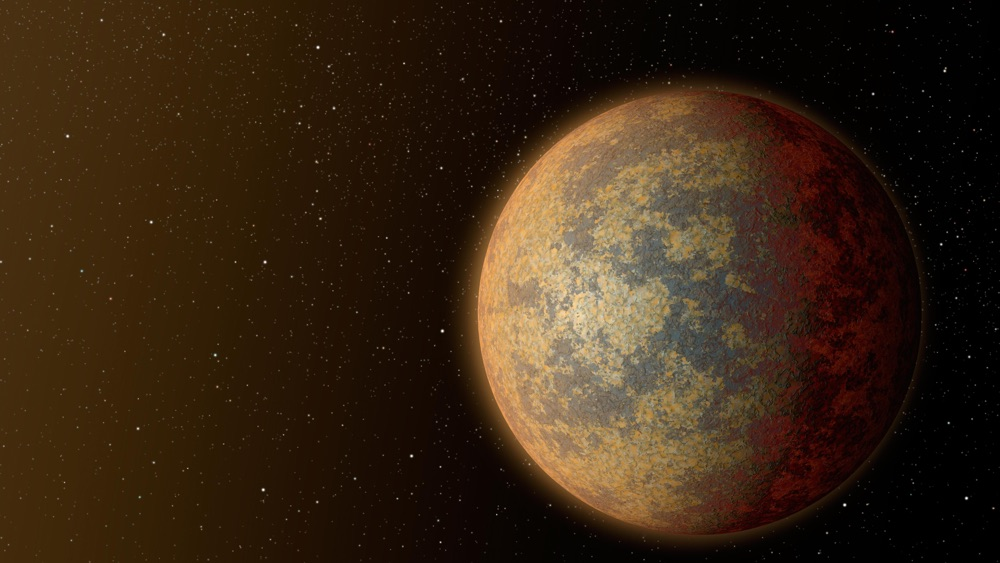

This app will prepare you for your journey through the galaxy to HD 219134 b, an exoplanet 21 lightyears away from our home on Earth.

Before entering the space capsule, please prepare accordingly:
Hang on and enjoy the ride. Your input is not needed (and, in fact, is heavily restricted) during the launch and minutes after reacing the proper altitude needed to utilize the ion propulsion engines that will carry you to HD 219134 b.
Thus begins the long journey to HD 219134 b. To pass the time, we've supplied you with a variety of pharmaceuticals along with a pamphlet to understand the benefits and drawbacks of each.
Whether you choose to utilize your full Vitality Buffer of four earth-years by experiencing the mystery and excitement of traveling through the vast universe, you must transition to the Cryo Pad for preservation for the rest of the voyage.
During your long nap, the engines will fire the experimental Worm Slip engines to reduce the journey by several hundreds of thousands of years. The status of the experiment will not be known until your planned Cryo Wake in 4000 earth-years.
If you are lucky enough to be able to see HD 219134 b with your own eyes, congratulations! No space pioneer has ever made it this far. Take a minute and celebrate this monumental accomplishment.
Next, review the Approach checklist for a detailed list of instructions on preparing the capsule for entry into a possible atmosphere.
If the Worm Slip experiment failed and you have only partially progressed on your journey to HD 219134 b, please review the Contingency Plan for ideas on how to make the most of the rest of your life in space.
Scientists aren't quite sure what life on HD 219134 b will be like! In order to help you adapt to a set of predicted atmospheric, pressure, and temperature environments, we've provided three Life Support Configurations.
Your Personal Pioneer Pad will help you determine which Life Support Configuration to use. In the event that none of the provided Life Support Configurations adaquately protects you from the HD 219134 b environment, we regret to inform you that the experiment is ended and we hope to one day retrieve your valuable data.